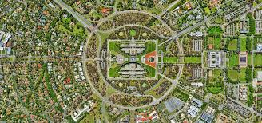
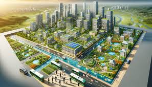
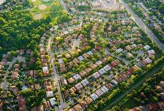

"Urban Planning and Design: Building Sustainable, Resilient, and Livable Cities"

As urbanization continues to accelerate worldwide, the need for thoughtful urban planning and design has never been more crucial. Cities are facing challenges ranging from climate change and population growth to resource management and social equity. To address these issues, urban planners and designers are increasingly focusing on creating cities that are not only sustainable but also resilient and livable. Here’s a deep dive into how cities can be designed or retrofitted to meet these goals.
Embracing Sustainability in Urban Design:
Sustainability is at the core of modern urban planning. Cities that prioritize sustainability aim to reduce their environmental impact while enhancing the quality of life for their residents.
Key strategies include:
Green Infrastructure:
green spaces, parks, and urban forests into city design not only provides recreational areas but also improves air quality, reduces urban heat islands, and supports biodiversity. Green roofs, vertical gardens, and permeable pavements are also effective in managing stormwater and reducing runoff.
Energy-Efficient Buildings:
urban design involves the construction of energy-efficient buildings that reduce energy consumption and greenhouse gas emissions. This includes using sustainable materials, optimizing natural light, and integrating renewable energy sources such as solar panels and wind turbines.
Sustainable Transportation:
cities to promote public transit, cycling, and walking reduces reliance on fossil fuels and decreases carbon emissions. Expanding public transportation networks, creating bike lanes, and developing pedestrian-friendly zones are essential for sustainable urban mobility.
Enhancing Resilience in Urban Areas:
Resilience is the ability of a city to withstand and recover from adverse events, such as natural disasters, economic shocks, and social disruptions. Urban resilience is increasingly important in the face of climate change and other global challenges. Strategies to enhance resilience include:
Climate-Resilient Infrastructure:
Cities must be equipped to handle extreme weather events like floods, hurricanes, and heatwaves. This can be achieved by building flood defenses, designing buildings to withstand high winds, and creating cooling centers for heatwaves. Additionally, cities can invest in resilient infrastructure such as underground utilities and elevated roads to protect against flooding.
Adaptive Urban Design:
Urban planners are incorporating flexibility into their designs to allow cities to adapt to changing conditions. This includes designing multi-purpose spaces that can be reconfigured for different uses, creating modular buildings that can be expanded or reduced as needed, and planning for potential future developments.
Community Preparedness and Engagement:
Resilience also involves preparing communities to respond to and recover from disruptions. This includes developing emergency response plans, conducting regular drills, and fostering community networks that can provide support during crises. Engaging residents in resilience planning ensures that solutions are tailored to the specific needs of the community.
Prioritizing Livability for Urban Dwellers:
Livability refers to the overall quality of life in a city, encompassing factors such as safety, affordability, access to amenities, and environmental quality. A livable city is one where residents can thrive, both physically and socially. Urban planning can enhance livability through:
Mixed-Use Development:
Designing neighborhoods that combine residential, commercial, and recreational spaces encourages a vibrant community life and reduces the need for long commutes. Mixed-use developments often include a variety of housing options, shops, offices, parks, and cultural spaces, making cities more dynamic and accessible.
Affordable Housing:
Ensuring that cities have adequate and affordable housing is critical to livability. Urban planners can address this by promoting inclusive zoning policies, supporting the development of affordable housing projects, and preserving existing affordable units. This helps prevent displacement and ensures that all residents, regardless of income, can find suitable housing.
Public Spaces and Amenities:
Access to public spaces, such as parks, community centers, and cultural institutions, greatly enhances the livability of a city. These spaces provide opportunities for recreation, social interaction, and cultural engagement. Urban planners should prioritize the creation and maintenance of such spaces, ensuring they are safe, accessible, and inclusive.

Retrofitting Existing Urban Areas:
While new cities and developments can be designed with sustainability, resilience, and livability in mind, existing urban areas often need to be retrofitted to meet these goals. Retrofitting involves updating and modifying infrastructure, buildings, and public spaces to improve their functionality and sustainability. Key retrofitting strategies include:
Energy Retrofitting of Buildings:
Existing buildings can be retrofitted with energy-efficient technologies, such as better insulation, energy-efficient windows, and upgraded HVAC systems. These improvements reduce energy consumption and enhance indoor comfort.
Upgrading Transportation Networks:
Retrofitting urban transportation systems may involve expanding public transit options, adding bike lanes, and redesigning streets to prioritize pedestrians and cyclists. These changes improve mobility, reduce congestion, and lower emissions.
Revitalizing Public Spaces:
Aging public spaces can be revitalized by adding green elements, improving accessibility, and introducing new amenities. This can breathe new life into neighborhoods and make them more attractive and functional for residents.
Engaging Communities in Urban Planning:
Effective urban planning and design require the active participation of the communities they serve. Engaging residents in the planning process ensures that their needs and preferences are reflected in the design of their city. Community engagement can be fostered through:
Participatory Planning Processes:
Involving residents in decision-making processes, such as public consultations, workshops, and surveys, ensures that their voices are heard and that the resulting plans reflect the community’s priorities.
Collaborative Design Initiatives:
Urban planners can work with local artists, architects, and community groups to co-create public spaces and infrastructure that resonate with the community’s cultural and social identity.
Transparency and Communication:
Keeping residents informed about ongoing and upcoming projects through regular updates, public meetings, and open forums builds trust and encourages community involvement.

Educate Yourself and Others:
Knowledge is a powerful tool in promoting sustainable living. Educate yourself about environmental issues, sustainable practices, and the benefits of living in a smart city. Share this knowledge with friends, family, and colleagues to inspire collective action. The more people are informed about the impact of their choices, the more likely they are to adopt sustainable habits.
Conclusion:
Designing and retrofitting cities to be more sustainable, resilient, and livable is essential in today’s rapidly changing world. By embracing green infrastructure, enhancing resilience, prioritizing livability, and involving communities in the planning process, urban planners can create cities that not only meet the challenges of the present but also thrive in the future. As we continue to innovate and adapt, the cities of tomorrow will be places where people can live healthy, fulfilling lives while coexisting harmoniously with the environment.